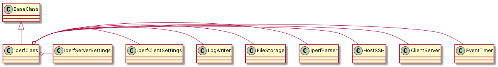

A set of convenience classes and methods for running iperf traffic.
This is a namedtuple to pass around the client and server for different directions.
ClientServer = namedtuple('ClientServer', 'client server'.split())
Note
In order to allow the Component that the user sees to be called Iperf the class here is re-named IperfClass to both mangle the name and refer to the fact that it now returns the bandwidth rather than just recording the output. I originally called it IperfMetric but since I need something to interpret the directions it is just IperfClass.

IperfClass |
|
IperfClass.event_timer |
|
IperfClass.client_server |
|
IperfClass.udp |
|
IperfClass.__call__ |
|
IperfClass.downstream |
|
IperfClass.upstream |
|
IperfClass.run |
|
IperfClass.start_server |
|
IperfClass.run_client |
|
IperfClass.version |
|
IperfClass.parser |
|
IperfClass.aggregator |
A holder of constants.
class IperfEnum(object):
"""
Iperf constants
"""
__slots__ = ()
section = 'iperf'
old_section = 'traffic'
false = 'off no false'.split()
# options
direction = 'direction'
upstream = 'upstream'
downstream = 'downstream'
both = 'both'
# defaults
default_direction = both
A configuration for iperf testing.
IperfConfiguration |
|
IperfConfiguration.direction |
|
IperfConfiguration.client_settings |
|
IperfConfiguration.server_settings |
|
IperfConfiguration.get_section_dict |
|
IperfConfiguration.reset |
|
IperfConfiguration.check_rep |
|
IperfConfiguration.example |
|
IperfConfiguration.section |